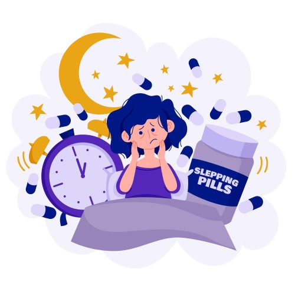

Algumas das doenças do sono:
-
Paralisia do Sono
A paralisia do sono é um transtorno em que a pessoa, ao acordar ou tentar adormecer, não consegue se mover, podendo sentir sufocamento, alucinações e medo intenso. Embora a causa exata seja desconhecida, pode acontecer em qualquer pessoa com hábitos de sono irregulares, pouco sono ou condições como ansiedade e narcolepsia.
-
Insônia
A insônia é um distúrbio que afeta a qualidade e quantidade do sono, caracterizado por dificuldade para adormecer, manter o sono ou voltar a dormir. Pode ser esporádica ou frequente, causada por estresse, depressão, alterações hormonais ou problemas de saúde, como refluxo e síndrome das pernas inquietas.
-
Sonambulismo
O sonambulismo é um distúrbio que ocorre na fase profunda do sono, em que a pessoa se move e mantém os olhos abertos, mas continua dormindo e não controla suas ações. Geralmente, ao acordar, não lembra do que aconteceu. O distúrbio tem um fator familiar e, embora possa acontecer em qualquer idade, costuma começar na infância, entre os 3 e 7 anos.
As doenças do sono englobam uma série de distúrbios que afetam a qualidade do seu sono, interferindo no seu bem-estar físico e mental. Por isso, não ignore os sintomas, procure um médico e siga as recomendações.
